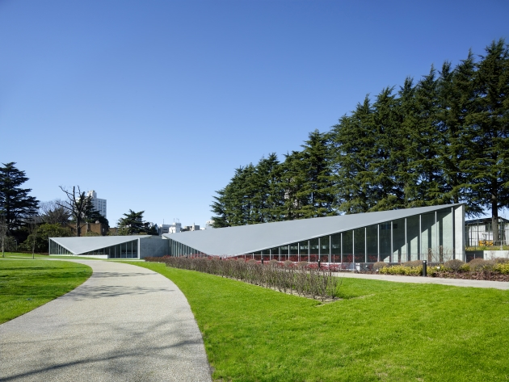
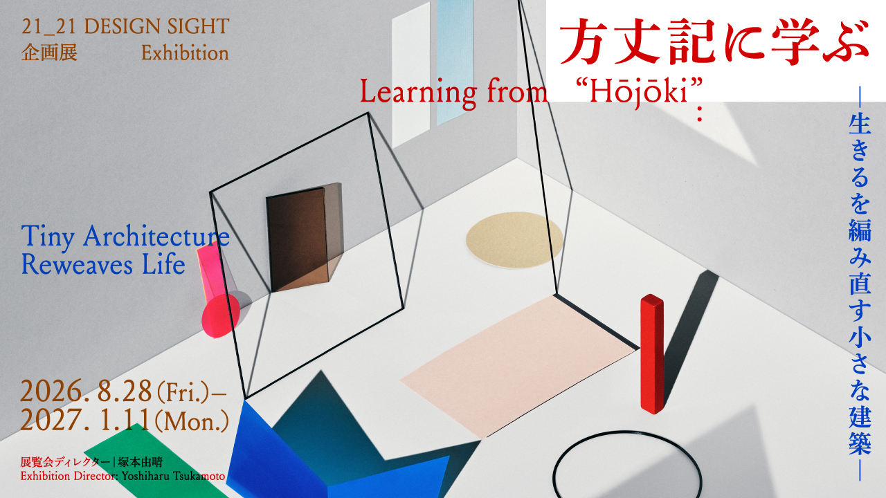
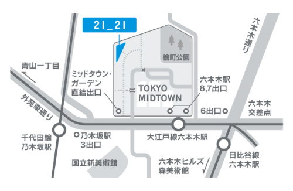
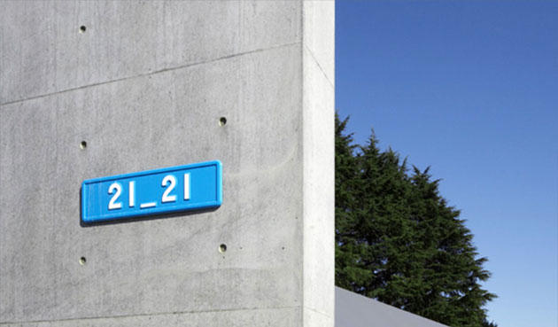
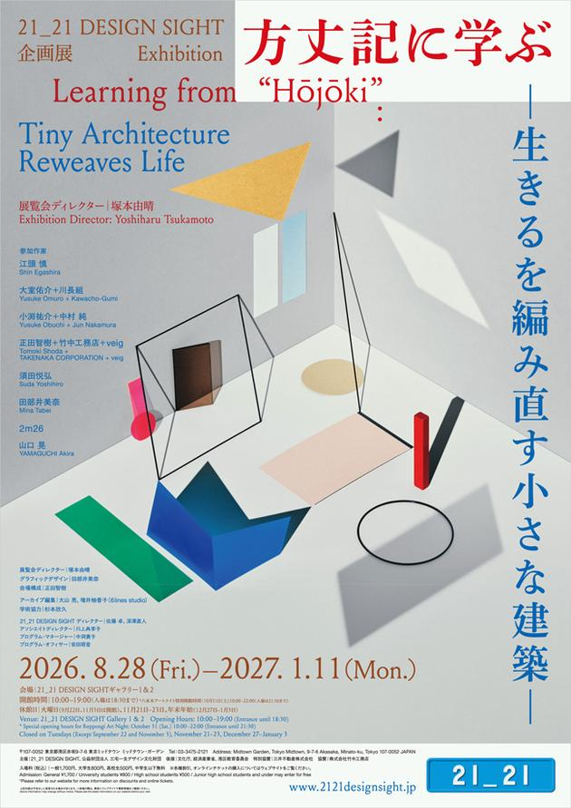
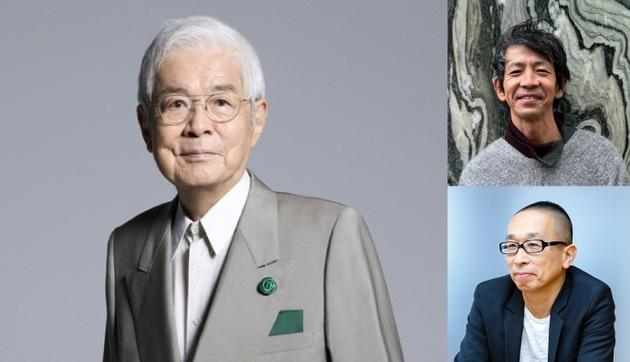
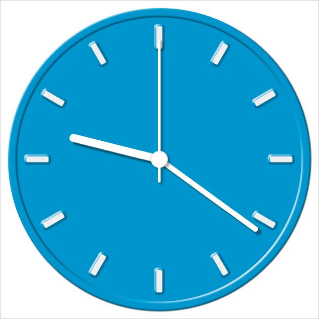
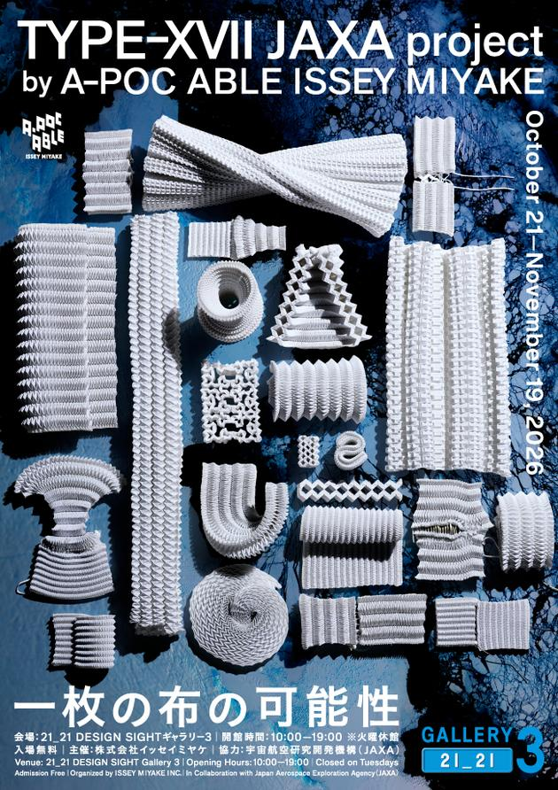
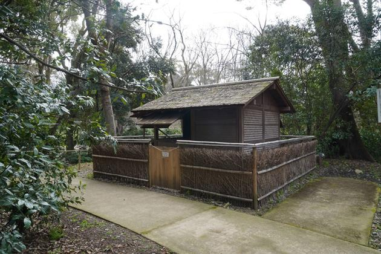
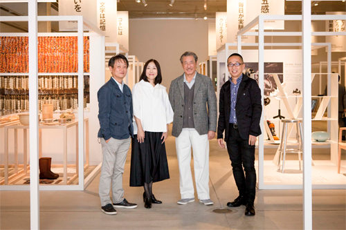

ご利用案内
- 開館時間：
- 10:00 - 19:00
（入場は18:30まで） - 休館日：
- 火曜日、年末年始、展示替え期間
- 入場料：
- 企画展、プログラムによって異なります

1 / 2


東京都港区赤坂9-7-6
東京ミッドタウン

从日常主题出发，展览、对谈与工作坊共同提供设计的不同视点。

2026年8月28日 - 2027年1月11日

2026年10月25日開催

2027年2月5日 - 5月23日

2026年10月21日 - 11月19日

记录策展过程与实地研究，把宣传入口延伸为可回看的内容档案。

三宅一生 / 佐藤 卓 / 深澤直人
〒107-0052 東京都港区赤坂9-7-6
10:00–19:00 / 入場は18:30まで